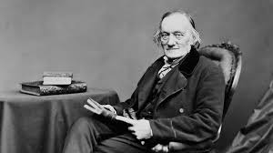

Менеджмент

Тема 1. Сущность и характерные черты современного менеджмента
Понятие менеджмента, его задачи и роль в развитии современного производстваПонятие менеджмента. Менеджмент как наука и искусство.
Цели менеджмента. Задачи менеджмента.
Роль менеджмента в развитии современного производства
Подход на основе школ. Эволюция управленческой мысли
Школа научного управления Ф. У. Тейлор (1856—1915), Г. Гантт (1868–1924) и Л. Гилбрет (1878–1972), Г. Эмерсон (1853–1931),Школа административного управления А. Файоль(1841—1925)
Школа поведенческих наук Школа человеческих отношений (1920 —1950) (поведенческих наук (1950 — по настоящее время)).
Возникновение школы человеческих отношений и поведенческих наук было обусловлено развитием социологии и психологии.
Представители этой школы: Питер Друкер, А. Маслоу, Элтон Мэйо, Мэри Фоллетт и др.
Школа количественных методов
Р. Акофф, С. Бир, А. Гольдбергер, Р. Люс, Л. Клейн - дерево решений, мозговой штурм, управление по целям, диверсификация (конгломераты), теория Z, бюджетирование (с нулевой базой), кружки качества, портфельный менеджмент, интрапренерство
Подходы в менеджменте
Классический (традиционный) подходотдельно рассматривается работа, администрирование, персонал, мотивация труда, лидерство, организационная культура.
Классический подход – подход с позиции выделения отдельных школ, рассматривает управление с четырех точек зрения: научного управления, административного управления, человеческих отношений и бихевиоризма, количественных методов управления
Процессный подход
управление рассматривается как непрерывная серия (цепочка) взаимосвязанных процессов.
Среди них: постановка целей, планирование, организация работ, мотивация, контроль и связующие процессы: коммуникация, принятие решений.
Разработка процесса выходит на первый план среди задач менеджмента М. Портер предлагает классификацию процессов:
основные, которые связаны непосредственно с производством продукции;
обеспечивающие процессы осуществляют поддержку основных процессов (снабжение, управление персоналом...);
управленческие процессы включают процессы по установлению целей и формированию условий для их достижения.
Ситуационный подход
Пригодность и применимость различных методов управления определяется конкретной ситуацией
Ситуационный подход концентрируется на ситуационных различиях между предприятиями и внутри самих предприятий, пытается определить значимые переменные ситуации и их влияние на эффективность деятельности предприятия.
Были сформулированы следующие внутренние переменные: цели, структура, ресурсы культура организации.
Системный подход
Основная идея системной теории заключается в том, что любое решение (действие) имеет последствия для всей системы.
Организация рассматривается как система взаимосвязанных элементов (люди, структура, задачи, технологии), которые ориентированы на достижение определенных целей в условиях меняющейся внешней среды.
Организация как система имеет свои входы (цели, задачи), выходы (результаты работы по показателям), обратные связи (между персоналом и руководством, внешними снабженцами и менеджерами, внешними сбытчиками и менеджерами, покупателями и внутренними сбытчиками и т. д.), внешние воздействия (налоговое законодательство, экономические факторы, конкуренты и т. д.)
Системный подход в управлении позволяет избежать ситуации, когда принятое решение в одной области превращается в проблему для другой
Основные цели при системном подходе:
повышение синергичности;
обеспечение положительной мультипликативности в организации;
Национальные особенности менеджмента
Развитие менеджмента в Японии, США и России.Американская модель менеджмента (территориальный захват, эффект масштаба)
Российская модель менеджмента (крепостное право, Советский Союз, приватизация и национализация)
Философия и отличительные черты японского менеджмента
гарантированная занятость для всех работников;
доверительная обстановка;
открытость и прозрачные ценности организации;
качество как управленческий стандарт;
информационный подход к руководству компанией;
соблюдение чистоты и порядка на рабочем месте

Портреты величайших менеджеров (Фредерик Тейлор 1856—1915)
Школа научного менеджмента (школа научного управления)исходила из предположения, что оптимальная организация производства может быть создана на основе точных знаний о том, как действуют люди. Сторонники данного направления полагали, что при помощи логики, наблюдений, анализа и расчетов можно организовать производство таким образом, что оно будет максимально эффективным.
Управление — это особая функция, которая отделена от фактического выполнения работы.
Свои идеи он сформулировал в книгах «Цеховой менеджмент» (1903) и «Принципы и методы научного менеджмента» (1911).
Тейлор получил образование инженера-механика и работал в сталелитейной компании
Цель менеджмента Тейлор видел в повышении производительности труда.
Достичь этой цели с точки зрения Тейлора было можно только путем выработки многочисленных правил, по которым совершаются операции и которые должны заменить суждения рабочего.
Фактически это означает, что основную роль в управлении производством Тейлор отводил инструкциям, в соответствии с которыми должны действовать рабочие
В этом заключался недостаток концепции Тейлора: она недостаточно учитывала личность рабочего.
По мнению Тейлора, имеется четыре основных принципа научной организации труда:
1) администрация предприятия должна стремиться к внедрению научно-технических достижений в процесс производства, заменяя традиционные и чисто практические методы;
2) администрация должна брать на себя роль отбора рабочих и обучения их специальности (до Тейлора этого не делалось и рабочий самостоятельно выбирал профессию и обучался сам);
3) администрация должна согласовывать научные принципы производства с принципами, действующими в сфере производства изначально;
4) ответственность за результаты труда распределяется равномерно между рабочими и администрацией.
Подробнее

Портреты величайших менеджеров (Анри Файоль 1841—1925)
Административная школа управления.Имел опыт работы в качестве руководителя высшего звена на крупном предприятии.
С точки зрения Файоля, эффективность производства может быть повышена не только за счет совершенствования приспособлений труда и операций, которые должен выполнять работник, но и за счет правильной организации работы целого предприятия.
Следовательно, роль администрации с точки зрения концепции Файоля заметно возрастала.
Под эффективным административным управлением Файоль понимал такое управление предприятием, которое позволяет извлечь максимум возможного из имеющихся в распоряжении ресурсов.
Теория Файоля состоит из двух частей — функций управления и принципов управления.
Функции отвечают на вопрос, что делает руководитель, а принципы — как он это делает.
Функций всего пять: планирование (прогнозирование), организация, координация, командование и контроль.
Файоль положил начало структурно-функциональному подходу, названному так потому, что все функции были расписаны по уровням управления — каждому свои и в разном объеме
Существовавшую до него линейную Структуру управления предприятием Файоль дополнил функциональными службами.
Тем самым он стал родоначальником самой распространенной системы — линейно-штабной структуры.
Файоль выделил 14 принципов управления:
1) разделение труда, благодаря которому удается повысить его производительность;
2) равновесие между полномочиями и ответственностью;
3) дисциплина;
4) единоначалие, при котором работник подчиняется только одному руководителю;
5) единство направления движения всех подразделений организации;
6) главенство общих интересов над личными;
7) достойное вознаграждение как условие верности работников;
8) равновесие между централизацией и децентрализацией;
9) иерархичность организации;
10) порядок во всем;
11) справедливость, представляющая собой сочетание доброты и правосудия;
12) стабильность персонала и недопустимость текучки кадров;
13) инициативность в построении и выполнении плана;
14) корпоративный дух — ощущение себя членом команды.
Представители этой школы выделяли три основные функции бизнеса:
финансы,
производство
и маркетинг.
Они полагали, что это разделение может лечь в основу оптимального деления организации на подразделения
Подробнее

Портреты величайших менеджеров (Генри Форд 1863-1947)
Правило №1. Инновации = успехмало иметь потрясающую идею, прежде всего, нужно уметь ее реализовать. В HR-сфере это точно также применимо, поскольку специалистам по работе с талантами очень важно воплощать идеи в реальность, бороться с сопротивлениями сотрудников к нововведениям и т. д.
Правило №2. Понимание своего рынка
проведите исследование и выясните, есть ли у людей потребность или интерес к вашему продукту, к вашей компании. Кроме того, такое исследование можно проводить для развития внутреннего и внешнего бренда работодателя. Нужно выяснить, что в вашей компании привлекает кандидатов и что удерживает сотрудников. Обладая этими данными, вы сможете выстроить эффективную стратегию развития компании.
Правило №3. Счастливые сотрудники = прибыльная компания
Для владельца бизнеса есть одно правило: производить товары самого высокого качества по минимальным ценам, выплачивая сотрудникам максимальную заработную плату
Правило №4. Принимать на работу человека, а не его прошлое
Мы никогда не спрашиваем о прошлом человека, ищущего у нас работу, мы принимаем на работу не прошлое, а человека. Если он сидел в тюрьме, то нет оснований предполагать, что он снова попадет в нее. Я думаю, напротив, что он будет особенно стараться не попасть в нее снова. Мы никому не отказываем на основании его прежнего образа жизни - выходит ли он из Гарварда или из тюрьмы Синг-Синг, нам все равно – мы даже не спрашиваем об этом. Человек должен иметь только одно: желание работать
Правило №5. Держать сотрудников в ежовых рукавицах
Многие считают методы Генри Форда не гуманными и бесчеловечными, поскольку он был приверженцем авторитарного стиля управления. Но, если подумать, в 2020 году большинство компаний с мировым именем работают по тому же методу.
С одной стороны руководство предлагает комфортные условия труда и хорошую зарплату, а с другой – контроль. Сотрудники больших компаний понимают, что им нельзя останавливаться в развитии и работать менее эффективно, даже если их постоянно хвалят.
Правило №6. Нет сложных задач. Любую задачу можно выполнить
Нет больших проблем, просто есть много мелких проблем
Подробнее

Портреты величайших менеджеров (Альфред Слоан 1875-1966)
В 1899 году отец Слоуна с компаньоном приобрели небольшой шарикоподшипниковый завод Hyatt Roller Bearing Company в Ньюарке (штат Нью-Джерси), на котором Альфред работал после института, и сделали его генеральным директором.В 1916 году президент General Motors Уильям К. Дюрант предложил Слоуну объединиться, и через два года Слоун вошёл в директорат корпорации. В 1923 году акционеры назначили Слоуна президентом компании, поставив перед ним задачу создать эффективный централизованный менеджмент при сложившейся многодивизиональной структуре.
Под его руководством General Motors с начала 1930-х годов стала лидером американского автомобилестроения.
Триумф Слоана заключается в том, что ему удалось доказать жизнеспособность децентрализованной структуры.
Он полагал, что менеджеры высшего уровня выполняют три функции: принимают решение о стратегии компании, определяют ее структуру и выбирают системы контроля.
Подробнее

Портреты величайших менеджеров (Роберт Оуэн 1771–1858)
– английский промышленник и крупный теоретик социализма, один из первых социальных реформаторов XIX в.Р. Оуэн родился в Уэльсе в семье бедного ремесленника. Оставив учебу в школе в возрасте девяти лет, стал учеником в магазине тканей.
В 1785 г. Р. Оуэн приехал в Лондон с целью приобретения опыта и получения места подручного в крупном и известном магазине мануфактурных товаров.
В 1788 г. переселился в Манчестер.
В 1790 г. он был назначен управляющим хлопчатобумажной фабрикой в Манчестере, на которой работало около пятисот рабочих.
Успешность его деятельности на этом посту позволила быстро стать партнером владельца.
В 1793 г. стал членом Литературного и философского общества Манчестера.
В 1799 г. Р. Оуэн и его партнеры купили четыре ткацкие фабрики в Нью-Ленарке (Шотландия).
В течение почти двадцати лет (с 1800 г.) на принадлежащих Р. Оуэну и его партнерам фабриках проводился социально-управленческий эксперимент, целью которого была гуманизация отношений между предпринимателями и рабочими и нахождение новых способов организации производства и управления, которые позволили бы облегчить условия труда, повысить заработную плату работникам и предоставить им гарантии занятости.
В Англии Р. Оуэну не удалось полностью реализовать свою концепцию.
Поскольку Р. Оуэн открыто критиковал капитализм и пропагандировал коммунистические идеи, в Англии его начали преследовать, результатом чего стал переезд Америку.
В 1825 г. он купил в штате Индиана 30 тыс. акров земли, на которой организовал коммунистическую производительную колонию «Новая Гармония».
Все члены колонии имели равные права на пищу, одежду, жилище и воспитание.
Однако эксперимент быстро провалился.
Сами колонисты не были подготовлены к такому «социальному эксперименту», они стали враждовать друг с другом и стремиться к личному обогащению.
В 1828 г. Р. Оуэн вернулся на родину.
Если внимательно присмотреться, то можно увидеть три цифры "8 8 8" на многих зданиях в Австралии.
Это знак поддержки принципа британского социалиста Роберта Оуэна, который вычислил, что людям нужно 8 часов на работу, 8 на отдых и развлечения, и 8 часов на сон.
Основные работы: «Об образовании человеческого характера» (1814), «Замечания о влиянии промышленной системы» (1815), «Доклад графству Ленарк» (1820), «Изложение рациональной системы общества» (1830), «Книга о новом нравственном мире» (1840). Р. Оуэн был одним из первых, кто на практике попытался реализовать новые подходы к управлению
Подробнее

Портреты величайших менеджеров (Макс Вебер 1864–1920)
Одной из самых известных работ учёного стала диссертация о протестантских истоках капитализма.Исследование на стыке экономической социологии и социологии религии получило развитие в известной книге «Протестантская этика и дух капитализма», увидевшей свет в 1905 году.
Оппонируя марксистской концепции исторического материализма, Вебер отмечал важность культурных воздействий, оказываемых религией, — именно в этом он видел ключ к пониманию генезиса капиталистической формы хозяйствования
Вебер определил государство как некоторый институт, который обладает монополией на легитимное применение насилия. Социолог впервые выделил различные типы общественной власти, подчёркивая, что институты современного государства во всё большей степени основываются на рационально-правовом типе.
В самой же «Этике» Вебер писал о том, что особенная этическая система кальвинизма как одной из деноминаций протестантского течения послужила причиной переноса экономического центра Европы из католических французских, испанских и итальянских городов в нидерландские, английские, шотландские и немецкие.
По мнению Вебера, общества с большей долей приверженцев Реформации сумели создать более развитую капиталистическую экономику. Аналогично во многоконфессиональных странах крупнейшие предприниматели были протестантами
Христианская вера исторически предполагала отказ от погружения в мирские дела, в том числе связанные с преследованием выгоды. Вебер показал, что данный тезис применим не ко всем течениям христианства, и некоторые конфессии не только поддерживают разумное участие в хозяйственных делах, но и наделяют их нравственным и духовным значением. Этическая система кальвинистов мотивировала последователей к упорному труду, рациональному ведению хозяйства и вложению прибыли в дальнейшее производство.
Концепция божественной природы призвания указывала, что хозяйственная деятельность является необходимым условием вечного спасения, праведность во всех других сторонах жизни была недостаточной.
Учение о предопределённости каждой судьбы снижало градус социальной напряжённости в отношении экономического неравенства, более того, богатство признавалось важным индикатором блаженной загробной жизни. Таким образом, погоня за благосостоянием считалась признаком не греховных жадности или честолюбия, но нравственности и праведности.
Вебер называл это «духом капитализма», подчёркивая нематериальный характер предпосылок формирования капиталистической системы хозяйствования
Вебер предложил создать бюрократическую систему управления, которая основана не на личных субъективных оценках качества труда управленцев и его производительности, а на количественных формализованных оценках в соответствии с определенными правилами и процедурами
Разделение труда и специализация
Четко определенная иерархия власти
Власть руководителя основывается на должностных полномочиях, делегированных с верхних уровней иерархии. Это обеспечивает его властью и правом отдавать подчиненным приказания, которым они обязаны следовать. Таким образом, создается цепь команд Высокая формализация
Деятельность организации регулируется «последовательной системой абстрактных правил» и состоит «в применении этих правил к частным случаям»
Внеличностный характер
Каждое официальное лицо в организации выполняет свою работу беспристрастно и формально, постоянно сохраняя дистанцию с другими членами организации и ее клиентами.
Кадровые решения, основанные на достоинствах
Наем на работу в организацию должен основываться на технической квалификации будущего работника, его опыте и деловых качествах
Четкое разделение организационной и личной жизни членов организации
Для того чтобы личные дела, потребности и интересы не вступали в противоречие с рациональным, безличным поведением сотрудников в организации, эти две сферы должны быть полностью отделены друг от друга
Дисциплина
Дисциплина, по Веберу, означает некоторое ограничение «степеней свободы» организационного поведения с помощью системы правил и инструкций и иерархии контроля.

Портреты величайших менеджеров (Питер Друкер (1909 — 2005))
итер родился в 1909 году в Австрии, позже переехал в Германию. Когда ему было 28 лет, Питер бежал от нацистского режима в США.Он работал в Гарвардском университете, а также был профессором нескольких колледжей, где преподавал философию, политику, историю и религию.
Позже — преподавал менеджмент и социальные науки, специализировался на экономике, консультировал бизнесменов и политиков.
Более пятидесяти лет преподавал искусство менеджмента.
Друкер считал, что цель любого бизнеса — «создать клиента», потому что именно он платит и решает, что важно.
Должен делать менеджер:
управлять, исходя из поставленных целей;
брать на себя риски;
принимать стратегические решения;
создавать такую команду, которая сможет управлять собой и измерять собственную производительность и результаты;
точно передавать информацию и мотивировать сотрудников;
видеть бизнес в целом;
соотносить продукт и всю отрасль с окружающей средой, выяснять, что важно.

Тема 2.1 Внешняя и внутренняя среда организации
Характеристика внешней и внутренней среды организацииПонятие «окружающая среда организации». Факторы внешней среды, их состав и влияние на деятельность организации.
Факторы внешней среды
Факторы макроокружения, создающие условия среды нахождения организации:экономические, характеризующие состояние экономики страны (величина ВВП, темпы инфляции, уровень безработицы, природные ресурсы, климат, уровень образования рабочей силы, величина заработной платы);
правовые, совокупность законов и других нормативных актов, устанавливающих правовые нормы и рамки отношений, а также их практическая реализация (позволяет определить допустимые границы действий и взаимоотношений с другими субъектами);
политические, определяющие направление и методы развития общества (главенствующая политическая идеология, стабильность правительства, сила оппозиции);
социальные явления и процессы (отношение людей к труду и качеству жизни, ценности, традиции и национальные особенности, демографическая структура общества, уровень образования);
технологические, определяемые развитием научно-технического прогресса (научно-технические разработки, инновации, модернизация производства)
Факторы непосредственного окружения организации:
покупатели.
Изучение покупателей позволяет организации выяснить, какой продукт, в каком объеме будет наиболее востребован, насколько широк круг покупателей и есть ли возможность расширения производства и сбыта продукции, конкурентоспособность продукции; поставщики.
Изучение деятельности и потенциала поставщиков позволяет организации обеспечить эффективность своей работы, снизить вероятность возникновения зависимости от недобросовестных поставщиков, обеспечить необходимый уровень себестоимости и качества продукции; конкуренты.
С ними организация борется за ресурсы, рынки сбыта. Важно учитывать успехи как внутриотраслевых конкурентов, так и конкурентов, производящих замещающую продукцию. Рост собственной конкурентоспособности организация может обеспечить углублением специализации, снижением издержек, использованием особенностей продукции и производства и т. п.; рынок рабочей силы
обеспечивает организацию кадрами необходимой специальности и квалификации, уровня образования и др.
Факторы внутренней среды, их состав и влияние на деятельность организации
Основные внутренние переменные: цели, структура, задачи, технологии и людиВсе организации имеют миссию (общественное назначение фирмы) и преследуют достижение определенных целей. Именно цели являются исходным этапом жизнедеятельности организации. Цели — желаемый конечный результат деятельности. А миссия организации — это четко выраженная причина существования организации.
Стратегия — это программа эффективных мероприятий и способов обеспечить осуществление миссии организации и достижение ее целей.
Все внутриорганизационные процессы протекают в рамках организационной структуры, которая отражает сложившиеся в организации разделение труда, связи и отношения между подразделениями. Организационная структура закрепляет задачи, функции, права и обязанности за каждым структурным подразделением, обеспечивает их взаимодействие в процессе работы. Организационная структура — это наиболее оптимальное соотношение вертикальных уровней управления и горизонтальных звеньев управления.
Технология — процесс преобразования ресурсов в конечный продукт деятельности (конкретные продукты или услуги). Технологии оказывают значительное влияние на внутреннюю среду организации, определяя требования к уровню образования и квалификации персонала, оказывая влияние на мотивацию, методы стимулирования, нормы поведения, организационную структуру, культуру. Ресурсы организации — это наличные или необходимые средства, возможности, ценности, запасы, обеспечивающие стабильную работу организации для достижения ее основных целей. Организация должна располагать следующими видами ресурсов:
человеческими (люди);
материальными;
энергетическими;
финансовыми;
информационными;
технологическими;
временными.
Организационная культура — это система коллективно разделяемых ценностей, убеждений, традиций, принципов и норм поведения работников внутри и вне организации. целенаправленность;
эффективность;
социальная ответственность;
открытость;
динамичность;
адаптивность;
автономность;
стабильность;
целостность
К функциональным областям управления внутренней среды организации относятся:
Кадровая функция — обеспечение производственной и других сфер людскими ресурсами (найм, подготовка и переподготовка кадров). Вьполнение всех управленческих действий, связанных с социальной сферой: оплатой, благосостоянием и условиями найма.
Финансы и бухгалтерский учет — денежные аспекты бизнеса, включая управление средствами (расход, изменение денежных масс), бухгалтерский учет — сбор, обработка и анализ финансовых данных.
Обеспечение ресурсами — осуществление и совершенствование системы материально-технического снабжения организации материалами и полуфабрикатами, машинами и энергетическими ресурсами.
Производственная функция — обеспечение функционирования производственного процесса в зависимости от цели производственной функции. Принятие решений в сфере технологий, организации, календарного планирования, запасов производства, а также контроля качества (все эти многочисленные задачи включены в оперативно-производственное управление).
Функция развития продукта и процесса производства — организация проведения исследований и развития процессов, разработка высоких технологий, компьютеризация, (совершенствование организации процессов). Изучение долгосрочной динамики развития продукта как основного фактора конкуренции на рынке, осуществление инновационной политики фирмы.
Функция развития материально-технического обеспечения производства — развитие инструментального хозяйства, ремонтных служб и служб технологической оснастки с целью обеспечения рациональных сроков физического и морального износа технических систем.
Маркетинг — особый вид деятельности по прогнозированию, осуществлению, выявлению и удовлетворению желаний потребителя. Анализ внешней и внутренней среды организации
Методы анализа внешней и внутренней среды. SWOT-анализ, методика его проведения

Тема 2.2 SWOT-анализ
Strengths. Сильные стороны — это то, что выгодно отличает компанию или продукт среди конкурентов. Это может быть уникальное торговое предложение, выгодные цены, более гибкие и удобные условия получения услуги. Сюда же можно отнести хорошо отстроенные бизнес-процессы, технологичное производство, хорошую маркетинговую стратегию и многое другое. При поиске сильных сторон обращают внимание на то, что приносит компании больше всего прибыли, положительный фидбек, результаты внедрения технологий и стратегий. Сильные стороны относятся к направлениям, на которые компания может повлиятьWeaknesses. Это слабые стороны — недостатки, то, что компания недосмотрела или не до конца проработала. Они мешают получать прибыль или развиваться: ошибки в процессах, неправильно подобранное оборудование или плохо работающий отдел продаж, высокий процент брака в товаре или опоздания в доставке. Чтобы выявить слабые стороны, необходимо обратить внимание на негатив, который поступает от клиентов. Также полезен анализ рынка. На недостатки компания тоже может повлиять: внедрить новые стандарты, провести модернизацию, оптимизировать процессы и так далее
Opportunities. Это внешние факторы, которые могут быть полезны для компании. Бизнес не влияет на них напрямую, но может ими воспользоваться. Например, повышенный спрос на какой-либо товар может принести большую прибыль, если вовремя его закупить. А появление нового направления в отрасли дает возможность открыть перспективный дополнительный проект. Opportunities — направления, на которые нельзя повлиять, но можно и нужно использовать
Threats. Угрозы — то, что мешает бизнесу извне: кризисы, антитренды, громкие скандалы и новые изобретения. Любое заметное изменение в мире может сказаться на бизнесе, привести к оттоку клиентов, потере прибыли или репутации. Угрозы — противоположность возможностям. Для поиска и прогнозирования угроз привлекаются бизнес-аналитики. Некоторые вещи предсказать нельзя, но можно провести экстренный анализ, если форс-мажорная ситуация уже произошла. Угрозы — еще одно направление, на которое нельзя повлиять. К факторам из этого списка необходимо готовиться, чтобы при их наступлении снизить ущерб
Тема 3. Функции менеджмента
Цикл менеджментаПонятие цикл менеджмента. Понятие функция менеджмента. Краткая характеристика функций менеджмента: планирование, организовывание, мотивация, контроль
Планирование в системе менеджмента
Назначение планирования. Виды планирования: тактическое, стратегическое, бизнеспланирование. Технология стратегического планирования.
Организационные структуры управления предприятием
Понятие и элементы организационных структур управления. Виды организационных структур управления: иерархические и органические структуры управления, их характеристика
Мотивация
Понятие мотивации. Элементы мотивации. Эволюция теорий мотивации. Содержательные теории мотивации. Процессуальные теории мотивации
Мотив – предмет потребности человека. Потребность – состояние организма, выражающее его объективную нужду в неком дополнении, находящемся вне его.
Мотивирование - это процесс побуждения себя и других к деятельности для достижения личностных целей и целей организации, процесс использования мотивов. Мотивация – все множество мотивов.
Контроль и его виды
Понятие и назначение контроля. Виды контроля: предварительный, текущий, заключительный
Практические занятия
Функции менеджмента
Организация. Признаки, структура, законы организации
Стратегический менеджмент. Процесс стратегического планирования
Система мотивации труда
Тема 3.1 Концепции мотивации
Поведение человека всегда мотивированно. Он может трудиться усердно, с воодушевлением и энтузиазмом, а может уклоняться от работы, иметь и любые другие проявления. Во всех случаях следует искать мотив поведения.
Мотив – предмет потребности человека. Потребность – состояние организма, выражающее его объективную нужду в неком дополнении, находящемся вне его.
Мотивирование - это процесс побуждения себя и других к деятельности для достижения личностных целей и целей организации, процесс использования мотивов. Мотивация – все множество мотивов.
Содержательные теории мотивации – анализируют содержание потребностей человека: Маслоу, МакГрегор, Герцберг, МакКлелланд.
А. Маслоу: иерархия потребностей. Уровни потребностей: физиологические, безопасность, социальные, потребность в общественном признании, самоактуализация. Каждый из уровней невозможно удовлетворить полностью, переход от одного уровня к другому возможен при удовлетворении потребностей этого уровня.
Герцберг – теория двух факторов мотивации: факторы гигиены и мотивационные факторы. Если человек не озабочен факторами гигиены – он работает хорошо.
Мак Грегор – теория х-у.
Мак Клелланд – теория приобретенных потребностей: причастность, власть, успех.
В связи с тем, что существуют различные пути мотивации, менеджер должен:
а) во-первых, установить набор критериев (принципов), которые наиболее сильно влияют на поведение сотрудника. Данные критерии, сведенные воедино, формируют личную философию, которая представляет собой основополагающее поведение. Разработав личную философию, менеджеры могут создать такую рабочую среду окружения, которая будет способствовать мотивации сотрудников. Данная окружающая среда, или организационный климат, окажет существенное влияние на отношение к делу работников, воздействует на сотрудников, которые значительно легче и менее болезненно воспринимают правила и регламент организации;
б) во-вторых, создать атмосферу, благоприятную для мотивации рабочих;
в) в-третьих, активно общаться со своими сотрудниками, поскольку, для того, чтобы работник был полностью мотивирован и работал с полной отдачей, он должен четко представлять себе и понимать, чего от него ждут. Это важно не только потому, что сотрудники знают об ожиданиях своих менеджеров, но им нужно говорить и о том, как они выполняют свою работу. Прямое общение с руководителем свидетельствует о его доступности в одинаковой мере для всех работников. Обратная связь обеспечивает крепкую основу для мотивации.
Врум В. – теория ожидания. Усилие-исполнение-результат. Мотивирующим является ожидание результата, два уровня результатов:
-
объем и качество выполняемой работы;
-
последствия – поощрение, наказание.
Степень желательности каждого результата для работы – валентность. При нулевой валентности работник считает, что от его усилий конечный результат не будет зависеть, при единице – работник осознает, что результат напрямую зависит от усилий.
Пов человека всегда связано с выбором более привлекательной альтернативы из неск вариантов. 2 гр ожиданий: а) ожидания, связывающие усилий и отдых в связи с работой; б) ожидание, связывающие исполнение работы и полученные результаты. Человек ведет себя в соотв-ии с тем, что по его мнению произойдет в будущем, если он произведет определенные затраты, усилия.
Человеком движет = сознание потребности + надежда на справедл вознаграждение Þожидание: 1-вероятность что работа удастся; 2- вероятность что результат будет замечен и вознагражден; 3 – вероятность что вознаграждение принесет удовольствие.
Лок Э.– теория постановки целей. Поведение людей определяется теми целями, которые они сами ставят перед собой или кто-либо ставит перед ними. Цель является стимулом. Определение целей (стимул) – исполнение работы (реакция) – удовлетворенность трудом.
Ради достижения этих целей человек осуществляет определенные действия и получает результаты, которые и являются мотивом. Характеристика целей:
1. специфичность;
2. сложность;
3. приверженность;
4. приемлемость.
Портер, Лоулер - теория равенства(справедливости). Справедливость вознаграждения чвляется стимулм для исполнения работы впредь.
Концепция партисипативного управления. Исходит из того, что человек всегда стремится участвовать в организационных процессах. Если ему предоставляется эта возможность, он начинает работать с большей отдачей. Менеджер должен предоставить персоналу возможность принимать решения. Это позволит добиться ответственности от работника, повышается информированность, а значит и задействованность потенциала чел ресурсов.
Вывод: все изложенные теории мотивации дают менеджерам ключ к построению действительной системы мотивирования людей. Сложность применения – невозможно точно установить мотивационную структуру человека.
Тема 3.1 Контроль в менеджменте
Контроль- это процесс обеспечения достижения организации своих целей. Контроль начинается с формулировки миссии организации, определения ее целей, структуры.
Виды контроля (по времени осуществления)
1.Предварительный контроль (осуществляется до начала деятельности)
2.Текущий контроль (осуществляется в процессе деятельности)
3.Заключительный контроль (осуществляется по окончанию деятельности)
Предварительный контроль - на стадии разработки планов и формирования организационной структуры. Контролируется точность выполнения правил, процедур, инструкций по разработке планов, формированию структуры организации.
Объектами предварительного контроля являются:
-
человеческие ресурсы,
-
материальные ресурсы,
-
финансовые ресурсы,
-
фактор времени.
Текущий контроль включает проверку руководителем результатов работы его подчиненных. Главная задача - своевременное выявление отклонений фактического состояния от планового значения и обеспечение обратной связи. Текущий контроль не проводится буквально одновременно с выполнением самой работы. Скорее он базируется на измерении фактических результатов, полученных после проведения работы, направленной на достижение желаемых целей. Для того чтобы осуществлять текущий контроль, таким образом, аппарату управления необходима обратная связь
При заключительном контроле обратная связь используется после выполнения работ, то есть передается информация о конечном результате. Информация, полученная, в ходе заключительного контроля используется в будущих периодах - при повторении сходной ситуации и решаемых задач.
Процесс контроля включает три основные стадии: установление стандартов (выработка показателей результативности); сравнение результата со стандартом; действия по итогам сопоставления.
Характеристики эффективного контроля (семь принципов соблюдения контроля):
-
стратегическая направленность (основная цель);
-
Ориентация на результат (достижение своих целей)
-
Соответствие дел (измерять то, что важно, а не то что легко измерить )
-
Своевременность
-
Гибкость (приспосабливаться к изменениям)
-
Простота
-
Экономичность контроля
Влияние системы контроля на поведение людей может выражаться в негативных поведенческих эффектах контроля:
-
Поведение ориентировано на контроль
-
Выдача организации непригодной информации.
Тема 4. Система методов управления
Характеристика методов управленияПонятие метод управления. Система методов управления: административные, экономические, социально-психологические, их характеристика. Особенности применения тех или иных методов управления
Тема 5. Коммуникации в менеджменте
Информация и коммуникации в менеджментеПонятие и назначение информации и коммуникаций в менеджменте. Виды коммуникаций. Коммуникационный процесс. Элементы коммуникационного процесса. Барьеры в коммуникационном процессе
Коммуникационные сети, их характеристика
Коммуникационные сети в организации. Виды коммуникационных сетей. Характеристика коммуникационных сетей
Тема 6. Деловое общение
Правила проведения деловых бесед, совещаний, телефонных переговоровДеловое общение: понятие, назначение. Деловая беседа: понятие, виды, структура, правила проведения. Совещание: понятие, структура, правила проведения. Телефонные переговоры: понятие, правила проведения
Тема 7. Процесс принятия решений
Управленческое решение. Методы и способы принятия решенийУправленческое решение: понятие, классификация. Этапы принятия управленческого решения. Методы принятия управленческих решений
Принятие решения – процесс выявления проблемы и поиска в среде альтернатив наилучшего ее решения
Управленческие решения бывают двух типов (теория принятия решений Саймона):
-
типовые задачи – структурированные проблемы, для которых известен алгоритм принятия решения;
-
нетиповые задачи (неструктурированные) – требуют творческого подхода при принятии решения.
Другие критерии классификации решений:
-
По сроку действия последствий решения (долгосрочные, среднесрочные, краткосрочные);
-
По частоте принятия решения (одноразовые, повторяющиеся);
-
По широте охвата (общий, касающийся всех работников, и узкоспециализированный);
-
По форме подготовки (единоличные, консультационные, групповые);
-
По сложностям (простые и сложные).
-
Определение проблемы, состоит в ее обнаружении и оценке. Обнаружение проблемы – осознание того, что возникло отклонение от планов. Оценка проблемы – установление ее масштабов и природы, здесь необходимо оценить степень серьезности проблемы и средства для ее решения.
-
Выявление ограничений и определение альтернатив. Причины проблемы могут находиться вне организации и внутренние проблемы, которые менеджер может успешно решать с помощью установления возможного альтернативного решения.
-
Принятие решения, связано с выбором альтернативы с благоприятными общими последствиями.
-
Реализация решения состоит в его конкретизации и доведении до исполнителя.
-
Контроль за исполнением решения, состоит в выявлении отклонений и внесении поправок
Методы принятия решений (подходы к принятию решений):
-
Неформальные эвристические методы, основаны на индивидуальной способности менеджеров. Методы базируются на интуиции менеджера, на его логических приемах и методах выбора оптимального решения.
-
Коллективные методы обсуждения и принятия решения:
-
Временный коллектив, создаваемый для решения конкретной проблемы
-
Метод мозгового штурма (мозговой атаки),
-
Метод Дельфы, представляет многоуровневые процедуры анкетирования, после каждого тура данные анкетирования дорабатываются и полученные результаты сообщаются экспертам с указанием расположения оценок. После стабилизации оценок опрос прекращается и принимается коллективное решение;
-
Количественные методы принятия решений - используют ЭВМ для моделирования и обработки информации
Основные элементы реализации управленческих решений (процесс рационального решения проблемы):
-
Целеполагание – процесс развития обсуждения и формализации целей, которых работники могут достичь.
-
Ознакомление. Исполнители должны получить четкую информацию о том, кто, где, когда, какими способами и средствами должны осуществлять действия. Соответствующие принятию решения.
-
Использование власти. (распоряжения, обещания, угрозы, предписания, нормы, стандарты)
-
Организация исполнения, 2 типа исполнения:
-
-
Ролевое исполнение (в рамках функций определенных должностными инструкциями);
-
Исполнение, выходящее за пределы ролевых функций.
Контроль является одним из основных элементов реализации управленческих
Тема 8. Управление конфликтами и стрессами
Конфликт: сущность, причины, классификация. СтрессыКонфликт: понятие. Причины конфликтов. Виды конфликтов. Последствия конфликтов. Способы разрешения конфликтных ситуаций. Стрессы. Последствия стрессов. Методы борьбы со стрессами
Конфликт – столкновение ценностей, интересов, привычек, в котором одна из сторон конфликта делает недостижимыми цели другой стороны. Конфликты могут являться как болезнью организации, так и источником развития. Наличие людей делает конфликты в организациях неизбежными.
Типология конфликтов.
-
Социальные (связаны с взаимодействием людей, возникают вследствие общения).
-
Межличностные;
-
Конфликт между личностью и группой;
-
Межгрупповой;
-
Между группой и обществом;
-
Конфликт между социумами.
-
Зоуконфликт
-
Территориальный;
-
Иерархический конфликт (различие в статусах);
-
Ресурсный;
-
Конфликт за внимание особи противоположного пола.
-
Внутриличностные конфликты – не связаны с работой, производством; возникают в результате противоречий между желаниями и возможностями; целями и способами их достижения.
Типология конфликтов с точки зрения возникновения:
-
объективные конфликты – в основе объективная причина (дифференциация, взаимозависимость задач, ограниченность ресурсво, преграды в коммуникации)
-
эмоциональные причины.
-
по направленности:
-
горизонтальные (статус конфликтующих сторон примерно одинаковый);
-
вертикальные.
Типология конфликтов в зависимости от последствий для организации:
-
функциональные - конструктивные: приводят к улучшению качества решения задач; повышают производительность;
-
дисфункциональные – деструктивные, основное внимание начинает уделяться личным отношениям среди сотрудников, а не работе, ухудшается взаимоотношение среди сотрудников; возникает атмосфера недоверия (Парсонс, Вебер, Дарендорф)
Стадии конфликтов:
-
латентный конфликт;
-
осознаваемый;
-
ощутимый – открытое столкновение интересов, точка А, «золотой час» руководителя, переговоры
-
действие
-
последствия (подавление или дальнейшее развитие).
Способы разрешения конфликтов:
-
межличностные – модель Томаса Климана
-
уход от кнфликта – отказ от дальнейшего развития конфликта, одна из сторон делает вид, что ничего не было;
-
приспособление - совместные действия для разрешения конфликта, без попытки отстоять собственные интересы;
-
соперничество – выдвижение альтернативных аргументов по всем аналогичным показателям противоположной стороны;
-
сотрудничество – совместное разрешение конфликтной ситуации с учетом интересов обоих сторон;
-
компромисс – разрешение конфликта на взаимовыгодных условиях.
-
структурные:
-
Разъяснение должностных обязанностей сотрудников;
-
Координация и интеграция;
-
Установление общих целей для организации;
-
Эффективная система вознаграждений и санкций.
Тема 9. Руководство: власть и партнёрство
Основы власти и влияния. ЛидерствоВласть: понятие. Формы власти. Лидерство. Типы лидеров. Качества лидера
Стили руководства, их характеристика
Стиль руководства: понятие, классификация. Одномерные стили руководства, их характеристика. Многомерные стили руководства, их характеристика Решётка менеджмента
Об успехах менеджеров судят не по тому, что они делают, а по тому, как они побуждают к работе других. Побуждать или мотивировать людей можно только воздействуя на них определенным образом или влияя на них.
В управленческой литературе способность оказывать влияние на поведение людей называется властью. Власть может относиться к индивиду, группе и организации в целом. Определение власти как организационного процесса подразумевает, что:
-
власть – это потенциал, имеющийся у ее пользователя, она существует не только тогда, когда применяется;
-
между тем, кто использует власть, и тем, к кому она применяется, существует взаимозависимость;
-
тот, к кому применяется власть, имеет определенную свободу действий.
Власть – это функция зависимости, а точнее, взаимозависимости. Власть может существовать, но не использоваться. Без власти нет организации. Основой власти называется то, откуда она, а источником власти – то, через что данная основа используется.
Базовые формы власти: принуждение (власть запугивания), экспертная власть (в силу профессиональных качеств), законная власть (рационально-легальная), основанная на вознаграждении (экономической выгоде), основанная на харизме – власть примера, основанная на традициях, основанная на авторитете. Позже были добавлены следующие формы: власть на основе информации и связей.
Недостаточно иметь власть: она должна быть достаточно сильной, чтобы побуждать других к работе — предпочтительно вдохновенной - направленной на достижение целей организации. Чтобы добиться этого, необходимо выполнить несколько условий:
1. Потребность, к которой апеллируют, должна быть активной и сильной.
2. Человек, на которого влияют, должен рассматривать влияние как источник удовлетворения/ неудовлетворения какой-то потребности.
3. Человек, на которого влияют, должен считать достаточно высокой вероятность того, что исполнение приведет к удовлетворению/неудовлетворению потребности.
4. Человек, на которого влияют, должен верить, что его усилие имеет хороший шанс оправдать ожидания руководителя.
Лидерство - это способность влиять на индивидуумов и группы людей, чтобы побудить их работать для достижения целей.
Поведенческий подход - создал основу для классификации стилей руководства или стилей поведения. Этот подход к изучению лидерства сосредоточил свое внимание на поведении руководителя. Согласно поведенческому подходу, эффективность определяется не личными качествами руководителя, а его манерой поведения по отношению к подчиненным.
Возможно, самое раннее исследование (30 годы) эффективности стилей лидерства было проведено Куртом Левиным и его коллегами. Левин выделил три основных стиля лидерства:
1. Авторитарный стиль - характеризуется высокой степенью единоличной власти руководителя: руководителю определяет все стратегии группы и никаких полномочий членам группы не делегирует, эксплуататор или благосклонный.
2. Демократический стиль - характеризуется разделением власти и участием трудящихся в управлении; ответственность распределяется, возможен только в горизонтальных структурах.
3.Либеральный стиль - характеризуется минимальным участием руководителя: группа имеет полную свободу принимать собственные решения. Подчиненным дается почти полная свобода в определении целей и контроле за своей работой. Нет реальной власти, управление – внезапные проверки, ситуационный поход, отсутствие руководства как такового.
Лидерство - это способность влиять на индивидуумов и группы людей, чтобы побудить их работать для достижения целей.
Ситуационный подход.
Ни подход с позиций личных качеств, ни поведенческий подход не смогли выявить логического соотношения между личными качествами или поведением руководителя, с одной стороны, и эффективностью, с другой. Это не означает, что личные качества и поведение не имеют значения для руководства. Наоборот, они являются существенными компонентами успеха.
Однако более поздние исследования показали, что в эффективности руководства решающую роль могут сыграть дополнительные факторы. Эти ситуационные факторы включают потребности и личные качества подчиненных, характер задания, требования и воздействия среды, а также имеющуюся у руководителя информацию.
Чтобы найти дополнительные факторы, теоретики стали обращать внимание не только на руководителя и исполнителя, а на всю ситуацию в целом.
Были разработаны четыре ситуационных модели:
Модель Фидлера - явилась важным вкладом в дальнейшее развитие теории, так как она сосредоточила внимание на ситуации и выявила три фактора, влияющие на поведение руководителя. Этими факторами являются:
1. Отношения между руководителем и членами коллектива. Подразумевают лояльность, проявляемую подчиненными, их доверие к своему руководителю
2. Структура задачи. Подразумевает привычность задачи, четкость ее формулировки и ее структуризации
3. Должностные полномочия. Это - объем законной власти, связанной с должностью руководителя, которая позволяет ему использовать вознаграждение, уровень поддержки, который оказывает руководителю организация.
Ситуационная модель лидерства “путь -цель” была разработана Теренсом Митчелом и Робертом Хаусом. Согласно этому подходу, руководитель может побуждать подчиненных к достижению целей организации, воздействуя на пути достижения этих целей. Приемы, с помощью которых лидер может влиять на пути и средства достижения целей:
1. Разъяснение того, что ожидается от подчиненного.
2. Оказание поддержки, наставничество и устранение сковывающих помех.
3. Направление усилий подчиненных на достижение цели.
4. Создание у подчиненных таких потребностей, находящихся в компетенции руководителя, которые он может удовлетворить.
5. Удовлетворение потребностей подчиненных, когда цель достигнута.
Теория жизненного цикла Херси и Бланшара.
Поль Херси и Кен Бланшар разработали ситуационную теорию лидерства, которую они назвали теорией жизненного цикла, согласно которой самые эффективные стили лидерства зависят от “зрелости” исполнителей. Зрелость отдельных лиц и групп подразумеваем способность нести ответственность за свое поведение, желание достигнуть поставленной цели, а также образование и опыт в отношении конкретной задачи, которую необходимо выполнить. (рисунок)
Модель принятия решений руководителем Врума - Йеттона.
Модель принятия решений руководителем Врума - Йеттона концентрирует внимание на процессе принятия решений. Согласно точке зрения авторов модели, имеется пять стилей руководства, которые может использовать руководитель в зависимости от того, в какой степени подчиненным разрешается участвовать в принятии решений. Эти пять стилей представляют континуум, начиная с автократического стиля принятия решений (AI и All), затем идет консультативный (CI и CII), и, наконец, завершается полным участием (GII). Применение каждого из этих стилей зависит от характеристик ситуации или проблемы.
АI. Вы сами решаете проблему или принимаете решение, используя имеющуюся у вас на данный момент информацию.
AII. Вы получаете необходимую информацию от своих подчиненных и затем сами решаете проблему.
CI. Вы излагаете проблему индивидуально тем подчиненным, кого это касается и выслушиваете их идеи и предложения. Затем вы принимаете решение, которое отражает или не отражает влияние ваших подчиненных.
СII. Вы излагаете проблему группе ваших подчиненных, и весь коллектив выслушивает все идеи и предложения. Затем вы принимаете решение, которое отражает или не отражает влияние ваших подчиненных.
GII. Вы излагаете проблему группе ваших подчиненных. Все вместе вы находите и оцениваете альтернативы
Тема 10. Основы управления персоналом
Управление персоналом в современных социально-экономических условияхИстория возникновения науки управления персоналом. Управление персоналом и эффективность деятельности организации. Осуществление деятельности по управлению персоналом
Формы и методы подбора и отбора персонала
Подбор и отбор персонала, понятие и назначение. Формы подбора персонала, из характеристика. Методы отбора, их характеристика
Адаптация персонала
Роль индивидуально – психологических особенностей личности в профессиональной пригодности. Адаптация на рабочем месте. Классификация видов адаптации.
Обучение персонала
Профессиональное обучение и повышение квалификации. Направления и формы профессионального обучения

Материал к дисциплине